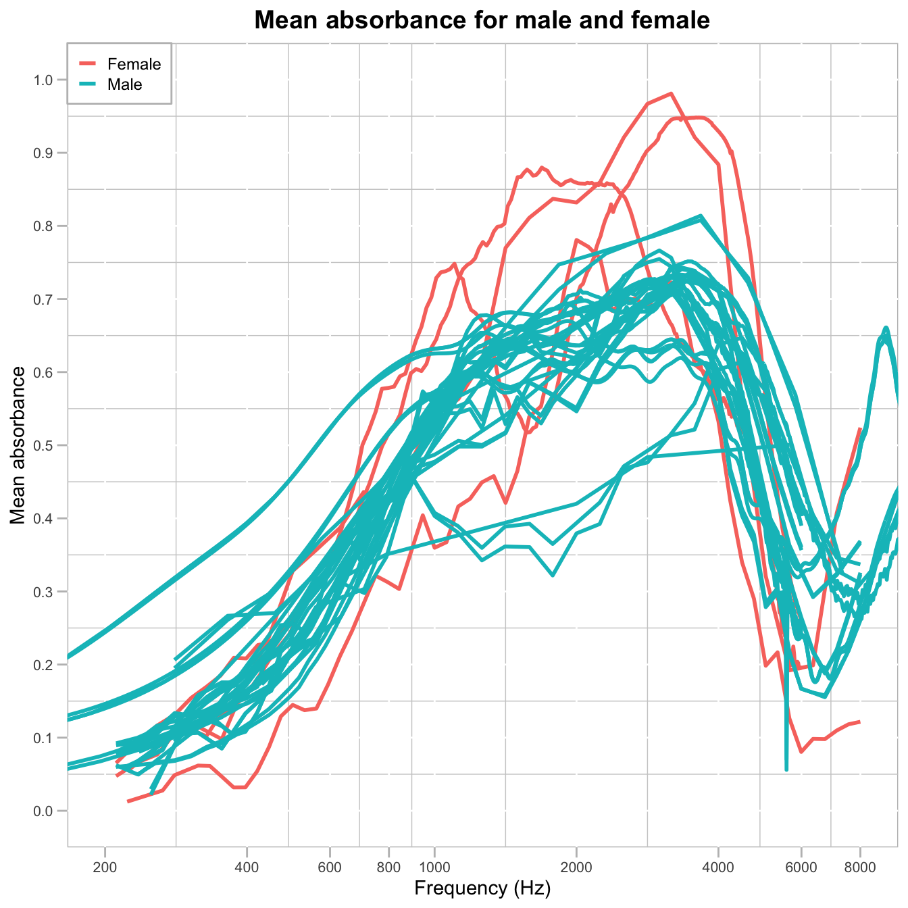

library(tidyverse)
library(dbplyr)
library(RMariaDB)Introduction
This analysis explores the Wideband Acoustic Immittance (WAI) Database hosted by Smith College. The database contains measurements of acoustic properties in human ears, including absorbance, power reflectance, impedance, and other related quantities. Implemented in MySQL, this online database serves as a repository for normative adult WAI measures, facilitating data sharing and analysis across different research studies. The database is publicly accessible here.
The analysis has two primary objectives:
- Reproduce Figure 1 from Voss (2020), which illustrates mean absorbances across various studies
- Visualize WAI mean absorbance across various studies for male and female participats
Import Libraries
Connect to the database
con_wai <- dbConnect(
MariaDB(), host = "scidb.smith.edu",
user = "waiuser", password = "smith_waiDB",
dbname = "wai"
)Data
Firstly, we need to understand the structure of the SQL database, including its tables and the variables within them.
Data base structure
SHOW TABLES;| Tables_in_wai |
|---|
| Codebook |
| Measurements |
| Measurements_pre2020 |
| PI_Info |
| PI_Info_OLD |
| Subjects |
| Subjects_pre2020 |
The WAI database consists of 7 tables, but our analysis will focus on the three most relevant and up-to-date tables: Measurements, PI_Info, and Subjects.
Measurements table
SELECT *
FROM Measurements
LIMIT 0, 5;| Identifier | SubjectNumber | Session | Ear | Instrument | Age | AgeCategory | EarStatus | TPP | AreaCanal | PressureCanal | SweepDirection | Frequency | Absorbance | Zmag | Zang |
|---|---|---|---|---|---|---|---|---|---|---|---|---|---|---|---|
| Abur_2014 | 1 | 1 | Left | HearID | 20 | Adult | Normal | -5 | 4.42e-05 | 0 | Ambient | 210.938 | 0.0333379 | 113780000 | -0.233504 |
| Abur_2014 | 1 | 1 | Left | HearID | 20 | Adult | Normal | -5 | 4.42e-05 | 0 | Ambient | 234.375 | 0.0315705 | 103585000 | -0.235778 |
| Abur_2014 | 1 | 1 | Left | HearID | 20 | Adult | Normal | -5 | 4.42e-05 | 0 | Ambient | 257.812 | 0.0405751 | 92951696 | -0.233482 |
| Abur_2014 | 1 | 1 | Left | HearID | 20 | Adult | Normal | -5 | 4.42e-05 | 0 | Ambient | 281.250 | 0.0438399 | 86058000 | -0.233421 |
| Abur_2014 | 1 | 1 | Left | HearID | 20 | Adult | Normal | -5 | 4.42e-05 | 0 | Ambient | 304.688 | 0.0486400 | 79492800 | -0.232931 |
The Measurements table contains the core data of our analysis, including publication identifiers, instrument information, and most importantly, frequency and absorbance measurements. This table links to PI_Info through the Identifier column and to Subjects through the SubjectNumber column.
PI_Info table
SELECT Identifier, Year, Authors, AuthorsShortList
FROM PI_Info
LIMIT 0, 5;| Identifier | Year | Authors | AuthorsShortList |
|---|---|---|---|
| Abur_2014 | 2014 | Defne Abur, Nicholas J. Horton, and Susan E. Voss | Abur et al. |
| Aithal_2013 | 2013 | Sreedevi Aithal, Joseph Kei, Carlie Driscoll, and Asaduzzaman Khan | Aithal et al. |
| Aithal_2014 | 2014 | Sreedevi Aithal, Joseph Kei, and Carlie Driscoll | Aithal et al. |
| Aithal_2014b | 2014 | Sreedevi Aithal, Joseph Kei, and Carlie Driscoll | Aithal et al. |
| Aithal_2015 | 2015 | Sreedevi Aithal, Joseph Kei, Carlie Driscoll, Asaduzzaman Khan, and Andrew Swanston | Aithal et al. |
The PI_Info table provides metadata about each publication, including author information and publication year.
Subjects table
SELECT *
FROM Subjects
LIMIT 0, 5;| Identifier | SubjectNumber | SessionTotal | AgeFirstMeasurement | AgeCategoryFirstMeasurement | Sex | Race | Ethnicity | LeftEarStatusFirstMeasurement | RightEarStatusFirstMeasurement | SubjectNotes |
|---|---|---|---|---|---|---|---|---|---|---|
| Abur_2014 | 1 | 7 | 20 | Adult | Female | Unknown | Unknown | Normal | Normal | |
| Abur_2014 | 3 | 8 | 19 | Adult | Female | Unknown | Unknown | Normal | Normal | Session 5 not included do to acoustic leak |
| Abur_2014 | 4 | 7 | 21 | Adult | Female | Unknown | Unknown | Normal | Normal | |
| Abur_2014 | 6 | 8 | 21 | Adult | Female | Unknown | Unknown | Normal | Normal | |
| Abur_2014 | 7 | 5 | 20 | Adult | Female | Unknown | Unknown | Normal | Normal |
The Subjects table contains demographic information about study participants, including ethnicity, sex, and other relevant characteristics.
Part 1: Reproducing Voss (2020) Figure 1
To recreate Figure 1 from Voss (2020), we first need to identify the publications included in the original figure. Let’s examine the available identifiers in the database.
Unique identifiers
SELECT DISTINCT(Identifier) FROM Measurements;| Identifier |
|---|
| Abur_2014 |
| Aithal_2013 |
| Aithal_2014 |
| Aithal_2014b |
| Aithal_2015 |
| Aithal_2017a |
| Aithal_2017b |
| Aithal_2019a |
| Aithal_2019b |
| Aithal_2020a |
After reviewing the list of Identifiers, I identified the following publications used in Voss (2020): Abur_2014, Feeney_2017, Groon_2015, Lewis_2015, Liu_2008, Rosowski_2012, Shahnaz_2006, Shaver_2013, Sun_2016, Voss_1994, Voss_2010,and Werner_2010.
Data acquisition
To recreate the figure, we need to calculate average absorbance values across frequencies for each publication. The legend requires additional publication information retrieved from the PI_Info table.
Query:
SELECT
Frequency,
AVG(Absorbance) AS Mean_absorbance,
CONCAT(pi.AuthorsShortList, ' (', pi.Year, ') N=',
COUNT(DISTINCT SubjectNumber, Ear), ': ', m.Instrument) AS Publication
FROM Measurements AS m
JOIN PI_Info AS pi ON m.Identifier = pi.Identifier
WHERE m.Identifier IN
("Abur_2014", "Feeney_2017", "Groon_2015", "Lewis_2015", "Liu_2008",
"Rosowski_2012", "Shahnaz_2006", "Shaver_2013", "Sun_2016",
"Voss_1994", "Voss_2010", "Werner_2010")
GROUP BY Frequency, m.Identifier, pi.Year, m.InstrumentCustom theme
We designed a custom theme for the plot to align with the style of the original figure.
custom_theme <- theme(
# Background
panel.background = element_rect(fill = "white", color = "grey"),
panel.grid.minor = element_line(color = "gray80"),
# Axis text and titles
axis.text = element_text(size = 8),
axis.title = element_text(size = 11, colour = "black"),
# Legend
legend.position = c(0, 1),
legend.justification = c(0, 1),
legend.key.size = unit(0.4, "cm"),
legend.text = element_text(size = 9),
legend.key = element_rect(fill = "white", color = "white"),
legend.background = element_rect(
fill = "white",
color = "grey",
size = 0.5
),
# Title
plot.title = element_text(hjust = 0.5, size = 14, face = "bold"),
# Ticks on x and y axis
axis.ticks = element_line(color = "grey", size = 0.5),
axis.ticks.length = unit(0.2, "cm")
)Recreate Figure 1 from Voss (2020)
Here is the code for the final visualization:
figure_data |>
ggplot(
aes(Frequency, Mean_absorbance, color = Publication)
) +
geom_line(size = 1) +
# Zoom in on the interval of interest
coord_cartesian(xlim = c(200, 8000), ylim = c(0, 1)) +
# Add custom ticks on x-axis
scale_x_continuous(
breaks = c(200, 400, 600, 800, 1000, 2000, 4000, 6000, 8000),
trans = "pseudo_log"
) +
# Add custom ticks on y-axis
scale_y_continuous(
breaks = c(0, 0.1, 0.2, 0.3, 0.4, 0.5, 0.6, 0.7, 0.8, 0.9, 1),
) +
# Add the labels
labs(
title = "Mean absorbance from each population in WAI database",
x = "Frequency (Hz)",
y = "Mean absorbance",
color = NULL
) +
# Apply the custom theme
custom_themeVoss (2020) describes the figure as follows:
“Mean absorbances for the 12 studies within the WAI database as of July 1, 2019. The legend includes peer-reviewed publications, the number of individual ears, and the equipment used in the studies. For ears with multiple measurements, the average was used. The figure includes all ears in the database, without controlling for the number of ears from each subject.”
Part 2: Mean absorbance for males and females
This analysis aims to determine whether there is a difference in mean absorbance between male and female participants. As in the previous analysis, we use the same set of publications.
Data acquisition
Participant sex information is retrieved from the Subjects table, which is joined with the Measurements table to link absorbance data with each subject’s personal information.
Query:
SELECT
Frequency,
CASE
WHEN UPPER(Sex) LIKE '%MALE%' THEN 'Male'
WHEN UPPER(Sex) LIKE '%FEMA%' THEN 'Female'
END AS Sex,
AVG(Absorbance) AS Mean_absorbance,
CONCAT(Sex, ' N=',
COUNT(DISTINCT m.SubjectNumber, Ear), ': ', m.Identifier) AS Label
FROM Measurements AS m
JOIN Subjects AS s ON m.SubjectNumber = s.SubjectNumber
WHERE m.Identifier IN ("Abur_2014", "Feeney_2017", "Groon_2015", "Lewis_2015", "Liu_2008", "Rosowski_2012", "Shahnaz_2006", "Shaver_2013", "Sun_2016", "Voss_1994", "Voss_2010", "Werner_2010")
AND Sex != 'Unknown'
GROUP BY Frequency, s.Sex, m.IdentifierVisualization
The following R code generates the visualization to compare mean absorbance between male and female participants:
# Graph the data
wai_sex |>
ggplot(
aes(Frequency, Mean_absorbance, group = Label, color = Sex)
) +
geom_line(size = 1) +
# Zoom in on the interval of interest
coord_cartesian(xlim = c(200, 8000), ylim = c(0, 1)) +
# Add custom ticks on x-axis
scale_x_continuous(
breaks = c(200, 400, 600, 800, 1000, 2000, 4000, 6000, 8000),
trans = "pseudo_log"
) +
# Add custom ticks on y-axis
scale_y_continuous(
breaks = c(0, 0.1, 0.2, 0.3, 0.4, 0.5, 0.6, 0.7, 0.8, 0.9, 1),
) +
# Add the labels
labs(
title = "Mean absorbance for male and female",
x = "Frequency (Hz)",
y = "Mean absorbance",
color = NULL
) +
# Apply the custom theme
custom_theme
This plot shows that female participants experience higher absorbance than males in the 800 Hz frequency range. However, the difference decreases after approximately 5000 Hz, where absorbance levels for both sexes become nearly identical.
Disconnect from the Database
# Disconnect from the database
dbDisconnect(con_wai, shutdown = TRUE)Acknowledgments
The normative WAI database and corresponding website are funded by the National Institutes of Health, NIDCD (R15 DC014129). The server is hosted at Smith College.
Citation
The DOI of this project is: doi.org/10.35482/egr.001.2022
Contributors to this work include:
- Dr. Susan E. Voss, Picker Engineering Program, Smith College
- Dr. Nicholas J. Horton, Professor of Statistics and Data Science, Amherst College
- Dr. Benjamin Baumer, Statistical and Data Sciences, Smith College
- Suzanne Palmer Computing and Technical Services (CATS), Smith College
- Melinda Pontes ’15 Picker Engineering Program, Smith College
- Wendy Jiang ’16 Picker Engineering Program, Smith College
- Tinli Yarrington ’18 Picker Engineering Program, Smith College
- Melody Owen ’17 Amherst College Andrew Kim ’18 Amherst College Yuhan
- Wen ’20 Picker Engineering Program, Smith College Julia Clark ’21
- Picker Engineering Program, Smith College Keane Ng ’23 Amherst
- College Jiayi Sun ’25 Picker Engineering Program, Smith College
- Casey Crary ’26 Amherst College